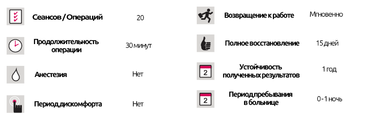

Лечение иглоукалыванием
Лечение иглоукалыванием
КРАТКОЕ ОПИСАНИЕ ЛЕЧЕНИЯ
Иглоукалывание подготавливает людей к потере веса, что на самом деле достигается диетами, индивидуально подготовленными для каждого человека. Иглоукалывание может помочь 5 способами:
- Снижение аппетита: иглоукалывание стимулирует выделение эндорфинов, а это означает, что человек испытывает меньшую потребность в удовольствии от приема пищи.
- Регулирует скорость обмена веществ и активность.
- Предотвращает появленик побочных эффектов, такие как изжога, расстройство желудка, высокое кровяное давление или повышенный/пониженный уровень сахара в крови, вызванные диетой. Это устраняет желание поесть, вызванное низким уровнем сахара в крови или желанием потушить чувство несварения.
- Уменьшает стресс у людей, сидящих на диете, регулируя гормональную и ферментативную активность, возникающую в результате этого стресса и предотвращающую потерю веса, поскольку они, как правило, вызывают быстрое увеличение веса.
- Предотвращает усталость и истощение.
Люди могут сидеть на диете более комфортно, а в некоторых случаях даже терять вес без необходимости делать это в первую очередь.
Можно ли восстановить вес, потерянный при иглоукалывании?
Нет, потому что настоящая ошибка - вера в то, что потеря веса носит временный характер, каким бы ни был метод. Важно отметить, что важным фактором является способность тела адаптироваться и привыкать к своей новой форме. Этому процессу адаптации можно помочь с помощью так называемой «программы профилактической терапии». Взяв за основу показатель потери веса, пациенты, прошедшие эту терапию, не набирают вес.
Имеются ли какие-либо побочные эффекты от иглоукалывания?
Иглоукалывание - это абсолютно естественная терапия, в которой не используются никакие химические вещества, а это означает, что иглоукалывание не имеет побочных эффектов, если оно проводится в гигиенической среде. Тем не менее, существует 3 обстоятельства, когда нельзя применять иглоукалывание:
- Грудное вскармливание матери (в течение первых 6 месяцев).
- Пациенты, которые в настоящее время проходят лучевую или химиотерапию.
- Пациенты с кардиостимуляторами.
Регулируется ли процедура иглоукалывания Министерством здравоохранения?
В Турции практикующие специалисты по иглоукалыванию должны быть выпускниками медицинской или стоматологической школы и иметь сертификат компетентного специалиста, предоставленный Министерством здравоохранения.
Есть ли возрастной предел для иглоукалывания?
Не существует возрастных ограничений, так как иглоукалывание является абсолютно естественной терапией.
Как практикующий врач выбирает иглы или лазеры?
Лазеры используются в тех случаях, когда у пациентов возникает фобия игл (обычно детей), будь то классические иглы для акупунктуры, используемые на теле, или иглы, которые остаются на месте, когда выбранной областью применения является ухо.
Является ли иглоукалывание эффективным вариантом для детей с расстройствами пищевого поведения?
Да, особенно для детей с ненасытным аппетитом. Тем не менее, предписанная диета должна быть тщательно составлена с учетом возраста ребенка.
Может ли иглоукалывание быть эффективным для детей с проблемы энуреза (недержание мочи в ночное время)?
Акупунктура эффективна в 75-80% случаев энуреза - или непроизвольного мочеиспускания, особенно ночью, - если это не результат анатомических проблем, таких как слабые мышцы мочевого пузыря, инфекции мочевыводящих путей или сдавление нерва мочевого пузыря.
Эффективно ли иглоукалывание при болезнях, особенно в детском возрасте, таких как астма, аллергия или синусит?
Иглоукалывание является альтернативным медицинским решением, которое следует попробовать в тех случаях, когда не помогают современные методы лечения, предлагаемые специалистами по лечению проблем с грудной клеткой или ушами, носом и горлом, при аллергической астме, аллергии и синусите. Количество случаев, когда иглоукалывание было успешно использовано, слишком много, чтобы его игнорировать.
Какие факторы определяют, сколько сеансов необходимо провести?
Ответы, полученные на проведение акупунктурной терапии варьируются в зависимости от возраста, пола и индивидуальных обстоятельств каждого пациента. Однако в целом можно сказать, что ранняя диагностика будет означать меньшее количество сеансов, поскольку количество необходимых сеансов связано с развитием (становлением хроническим) заболевания.
Могут ли беременные пройти процедуру иглоукалывания?
Существует ошибочное мнение, что иглоукалывание не подходит для беременных женщин, хотя это совершенно естественная терапия. Причиной этого является то, что многим беременным женщинам, которые выбрали иглоукалывание для решения проблем с лишним весом, также не была предложена строгая диета/программа питания. С одной стороны, иглоукалывание является эффективным решением без побочных эффектов.
Могут ли беременные женщины поддерживать свой текущий вес с помощью иглоукалывания?
Иглоукалывание может применяться во время беременности, чтобы предотвратить увеличение веса, тягу к еде и регулировать аппетит. Кроме того, иглоукалывание может использоваться в случаях плохой утренней тошноты и как способ бросить курить, что жизненно важно для развивающегося плода. Тем не менее, иглоукалывание и диета должны проводиться по согласованию с вашим консультантом.
Можно ли лечить бесплодие иглоукалыванием?
Акупунктура может и должна использоваться для лечения бесплодия после проведения всех других методов лечения (ЭКО, микроинъекция и т. д.), которые применялись на пациентах, у которых нет других анатомических проблем, таких как закупорка яичниковых / яичечных труб. Как и в случае с природой, у каждого человека есть энергетический баланс, и для достижения успеха иглоукалывание является значительным благодаря перебалансированию энергии человека.